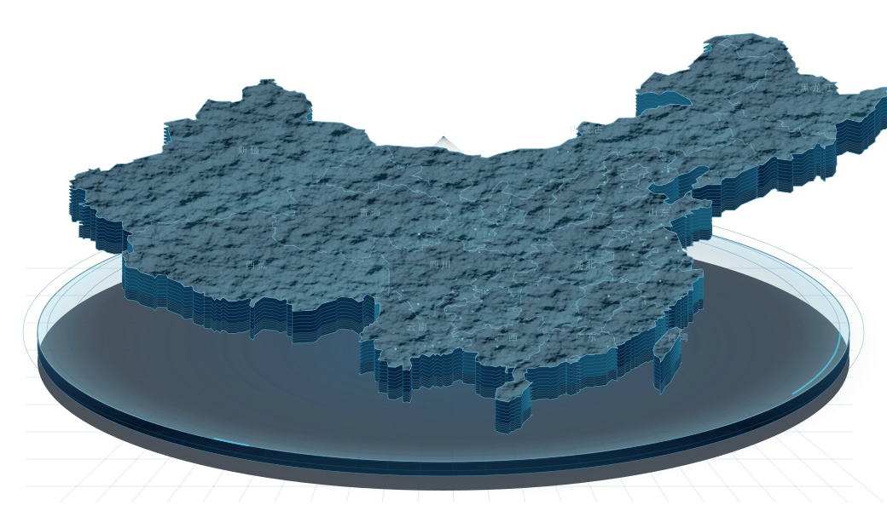
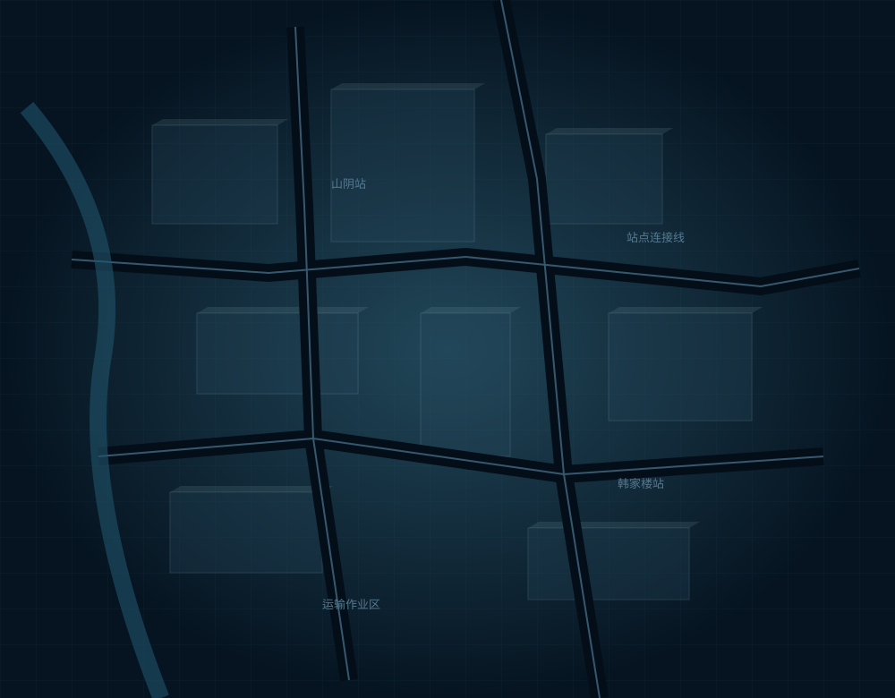
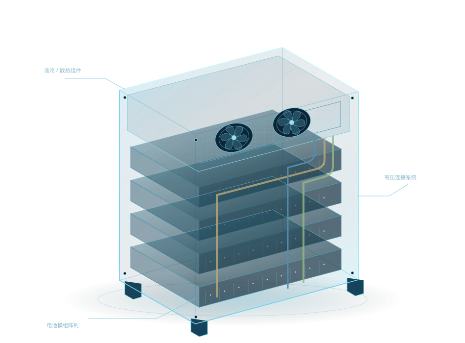
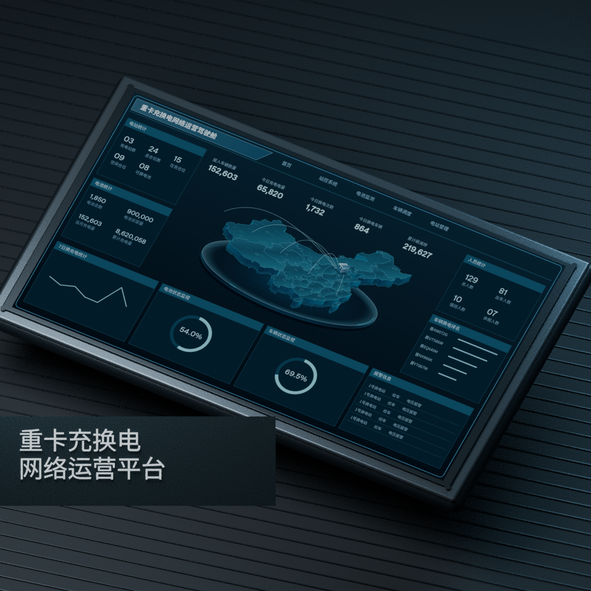

站点与设备
站点容量、仓位状态、充电作业与现场设备

新能源重卡的运输运营，连接着站点、设备、车辆与电池。平台围绕充换电网络，集中展示能源供给、设备作业、车辆调度与维修任务，让全域状态与现场信息在同一个系统中衔接。
以运营总览建立全局判断，以站控视图进入现场作业，以电池和车辆详情定位具体对象，再通过设备告警与维修工单跟进问题。界面采用冷青蓝驾驶舱语言，在密集业务信息中建立清晰的阅读次序。
从业务对象、使用场景与信息诉求出发，梳理平台需要表达的内容。
站点容量、仓位状态、充电作业与现场设备

在站与在车电池、SOC、电压电流与故障

油电车辆、运单、位置、轨迹与能源记录

责任人员、维修计划、优先级与处理状态
总览先呈现核心指标、站网与趋势，建立整体运行态势。
使用地图、场景和结构图连接站点、设备、电池与车辆。
通过数据层级与语义颜色，区分运行、空闲、故障和任务优先级。
核心指标先行
辅助信息分层组织
站点、设备、车辆与电池
以统一结构建立联系
用状态色与克制动效
表达运行与异常
围绕能源、车辆与设备，将监测、作业和维修内容串联起来。
从业务内容到视觉表达，再从核心场景扩展到完整页面。
在同一地图空间中，连接站网、运行链路与业务对象。
关键运营指标与各类资源统计。
站点、电池、车辆及运输链路。
区域轮廓、地图分区、厚度与环境光。
站点与车辆对象
连接关系与运输光轨

区域底图与信息分区
站点电池车辆人员同一套冷色结构、明暗层次与细轮廓，在不同业务页面中保持一致。
DIN 风格 / 加粗主数值 / 约 30–35 px
正文与业务字段 / 14–16 px
关键状态使用独立颜色，中文不依赖装饰性英文或数字编号。
单一状态标签，14 px 苹方
橙色状态，不重复小字与圆点
明确分组、对齐与字段间距
地图、设备、数据与反馈，构成清晰的信息层级。

保留设备与站房关系，减少遮挡与过强的金属反射。
以概要指标、对象详情和记录明细逐层展开。
以状态颜色、进度和告警提示表达变化。
1920 × 1080 画布，监测大屏与业务详情遵循同一套间距和分区逻辑。
运输光轨与数值自动变化，直接呈现运营状态。
以紧凑比例组织设备、电量与业务字段，明确标题与内容层级。
所有设计按业务场景依次展开，无需点击切换。
保留左侧电池柜、右侧重卡、顶部吊装结构及透明站房的关系，统一为冷青蓝色调。
从车辆俯视位置进入八仓状态，集中表达取放仓、作业步骤、传感器与连接器信息。
区分在站与在车电池，保留站点与车队统计、电量阈值、区域分布与对象详情。
围绕设备结构展示健康状况、SOC、电压电流、温度、充放电统计与故障。
车辆信息、SOC与电池编号，与运单、任务和告警同屏组织。
按燃料类型切换车辆字段，保留剩余油量与调度信息。
将车辆档案、累计运营指标、电池信息与最近一次换电记录分组呈现。
以日期、播放速度、进度与节点组织轨迹回放，清晰表达车辆位置。
设备矩阵区分运行状态，保留车牌、电量、剩余时间、趋势与告警。
以订单视角查看充电站的统计变化，保持与充电量视图一致的框架。
通过连接关系展示充电设备与车辆，突出SOC、电量、剩余时间和当前记录。
完整保留工单字段，突出优先级、状态、计划与人员，整理筛选和表格密度。
故障与设备归属分区呈现，计划时间和责任人员分组对齐，处理记录集中查看。
将基本信息、故障设备、计划人员分区填写，右侧摘要与内容同步。
从全域运营到设备细节，形成统一的工业运营驾驶舱。

页面使用设计样例数据，区域、轨迹及设备结构按示意表达。